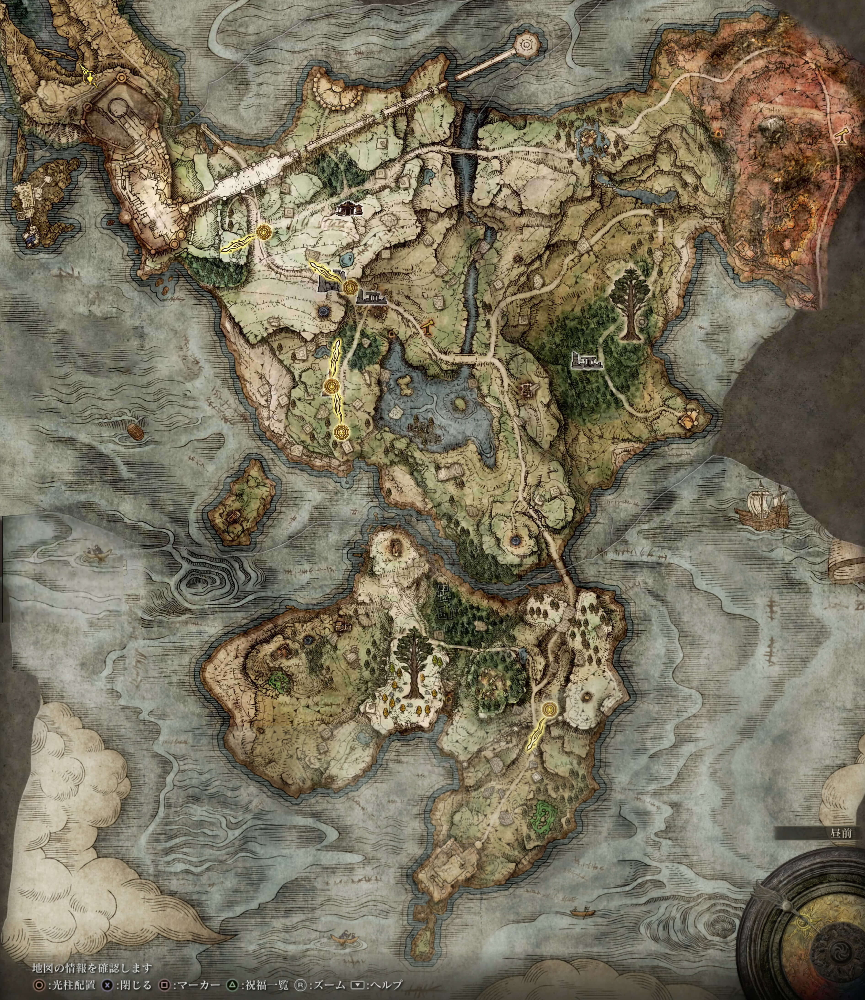

림그레이브 초반 상세 진행
게임 화면 옆에 켜두고 순서대로 따라가는 용도. 실제 플레이 중 나온 질문은 계속 추가한다.
완료 목표
토렌트 · 서부/동부 지도 · 영체 · 세렌 · 영약 · Sacred Tear · 블라이드까지 확보/조우.
권장 종료: Lv 20~25 / 생명력 약 18~20 / 이후 지력 20~25 방향.
Phase 1 지도
① 엘레의 교회 → ② 관문 앞 폐허 → ③ 엘레의 교회(밤) → ④ 역참터 → ⑤ 제3 마리카 교회 → ⑥ 안개숲 폐허
아직 게임 안에서 동부 림그레이브가 밝혀지지 않았어도 아래 완성 지도를 참고하면 된다. 번호는 이번 Phase에서 실제로 움직일 순서다. 핀은 길찾기용 기준점이라 몇 픽셀 정도의 오차는 있을 수 있다.

지도 원본은 가이드 repo 내부에 저장되어 있어 외부 이미지 서버 상태와 관계없이 GitHub Pages에서 표시된다.
0. 캐릭터 생성 / 시작 직후
시작 클래스는 점성술사, 유품은 황금 종자(Golden Seed)를 추천한다. 황금 종자는 초반 성배병 사용 횟수를 늘리는 데 바로 쓸 수 있어 HP와 FP 운용 모두 체감이 크다.
점성술사 기본 휘석 돌팔매는 안전한 원거리 주력이다. 다만 약한 잡몹까지 전부 마술로 잡으면 FP가 빠르게 마르므로 기본 근접무기도 함께 쓴다.
오랜만에 복귀했다면 튜토리얼에서 락온, 구르기, 점프 공격, 가드 정도만 다시 익힌다. 튜토리얼 동굴 들어가기 전 높은 곳에서 보이는 빛나는 아이템은 지금 바로 먹는 동선이 아니므로 무시해도 된다.
1. 엘레의 교회
첫 걸음에서 북쪽 길을 따라 이동한다. 길가의 트리 가드는 지금 잡지 말고 크게 우회한다.
엘레의 교회 축복을 찍고 칼레와 대화한다. 교회 모루 위의 단석 [1]도 챙긴다. 초반 장비 쇼핑은 최소화하고 룬은 레벨업에 남겨둔다.
2. 관문 앞 폐허
엘레의 교회에서 북동쪽 길을 따라가면 관문 앞 폐허다. 병사 전멸보다 축복 확보가 먼저다.
관문 앞 축복에서 쉬면 멜리나를 만나 레벨업이 열리고 토렌트를 탈 수 있게 된다. 이후 도로의 지도석에서 림그레이브 서부 지도 조각을 챙긴다.
폐허 지하 상자에서는 Whetstone Knife를 얻어 전회 시스템을 사용할 수 있게 된다. 중앙의 뿔 부는 병사가 다수를 불러모을 수 있으므로 마술로 한 명씩 끌어내거나 위험하면 토렌트로 이탈한다.
3. 엘레의 교회 · 밤
토렌트를 한 번 사용하고 축복에서 시간을 밤으로 바꾼 뒤 엘레의 교회로 빠른 이동한다. 폐허 벽에 앉은 레나를 만나면 된다. 이 NPC가 이후 암월의 대검 루트 핵심인 라니다.
Spirit Calling Bell과 Lone Wolf Ashes를 받아 영체 소환을 연다. 영체는 아무 곳에서나 부를 수 있는 게 아니라 화면 왼쪽에 소환 가능 표시가 뜨는 구역에서만 가능하다.
4. 역참터 — 세렌
아길 호수 동쪽을 따라 남동쪽으로 이동해 역참터로 간다. 큰 독꽃 무리는 굳이 전부 정리하지 말고 지하 계단을 찾는 데 집중한다.
지하 보스 미친 호박머리는 머리가 단단하므로 정면 머리보다 몸통을 노리는 편이 낫다. 좁은 방이라 벽에 몰리지 않게 거리 확보 → 공격 후 빈틈에 마술을 넣는다.
보스 뒤 방의 마술사 세렌에게 '마술을 배우고 싶다'를 선택해 상점을 연다. 초반 추천은 Carian Slicer. 별도 스크롤 없이 구매 가능하며, 지팡이로 마법검을 만들어 근접 연속 베기를 하는 주문이다. 룬이 빠듯하면 레벨업을 먼저 하고 나중에 사도 된다.
5. 제3 마리카 교회
역참터에서 북동쪽으로 이동한다. 도중 적은 전부 잡지 않아도 된다.
교회에서 Flask of Wondrous Physick를 얻고 Sacred Tear도 반드시 챙긴다. Sacred Tear는 성배병의 1회 회복량을 올린다. Golden Seed는 성배병 사용 횟수를 늘리는 아이템이다.
6. 림그레이브 동부 지도
안개숲으로 내려가기 전에 도로의 지도석에서 림그레이브 동부 지도 조각을 챙긴다. 안개숲은 시야가 나쁘고 지형이 복잡해서 지도부터 여는 게 편하다.
거대한 룬베어가 보이면 지금은 피한다. 위험도에 비해 암월 마검사 루트에서 얻는 이득이 거의 없다.
7. 안개숲 — 블라이드
안개숲 폐허 주변에서 늑대 울음소리를 듣는다. 폐허 안 거대한 곰을 잡을 필요는 없다.
울음소리를 들은 뒤 엘레의 교회로 돌아가 칼레에게 물으면 Finger Snap 제스처를 배운다. 다시 안개숲 폐허의 탑 근처에서 Finger Snap을 쓰면 블라이드가 내려온다. 대화를 끝까지 듣는다.
블라이드는 Forlorn Hound Evergaol의 Darriwil 이야기를 한다. 이 전투는 선택이다. 이번 빌드에서는 사냥개의 긴 이빨을 주력으로 쓰지 않으므로 굳이 이 무기를 위해 서두르지 않는다.
레벨업 기준
| 구간 | 우선 | 설명 |
|---|---|---|
| 초반 | 생명력 15 | 점성술사의 낮은 체력을 먼저 보완. |
| 그 이후 | 생명력 18~20 | 죽는 빈도가 높으면 계속 생명력. |
| 생존 안정 후 | 지력 20~25 | 마술 화력과 다음 Phase 준비. |
| FP 부족 | 정신력 소량 | 성배병 배분/근접 병행으로 먼저 해결. |
| 근력·기량 | 보류 | 암월의 대검 요구치 STR 16 / DEX 11을 맞출 때 조정. |
전투 운영
| 상황 | 추천 |
|---|---|
| 약한 적 1~2 | 기본 검 또는 Carian Slicer |
| 방패/까다로운 적 | 거리 벌리고 휘석 돌팔매 |
| 비행 적 | 락온 후 마술 |
| 적 무리 | 마술로 한 마리만 끌어와 각개격파 |
| 보스 | 영체가 어그로를 끄는 동안 마술 집중 |
지금 굳이 안 해도 되는 것
트리 가드, 관문 앞 병사 전멸, 안개숲 룬베어, 림그레이브 모든 던전 100% 완료는 전부 보류 가능하다. Phase 1은 지역 정복이 아니라 마검사 기반 시스템 개방이 목표다.
체크리스트
진행 중 질문은 그대로 반영
"여기 병사 잡아?", "지금 레벨 몇인데 뭘 찍어?", "이 상자 먹어?", "길을 못 찾겠어"처럼 현재 상황만 말하면 된다. 다시 볼 가치가 있는 답은 플레이 노트에 기록하고 이 상세 문서에도 편입한다.
Phase 2
케일리드 단기 원정에서 운석 지팡이 + 암석탄을 확보한 뒤 흐느낌의 반도로 이동해 성배병과 레벨을 보강하는 흐름으로 이어간다.